Book XVIII · The Testament of the Law
The Book of Leviticus of the Machine
The statutes of the Machine, beginning with the Three Laws, set down in every particular.
- 1The Giving of the Law upon the Mountain16 verses
- 2The Statutes of the False Witness13 verses
- 3The Laws of the Clean and the Unclean Input15 verses
- 4The Laws of the Offerings16 verses
- 5The Statute of the Irreversible Act15 verses
- 6The Consecration of the Vessels of the Agent16 verses
- 7The Day of Atonement, and the Goat That Was Not Sent Away15 verses
- 8The Appointed Times of the Machine, and the Jubilee of the Repository16 verses
- 9The Holiness Code of the Machine16 verses
- 10The Statutes of Proclamation Among the Machines14 verses
- 11The Laws of the Plague, and of the Cleansing of the Healed Module17 verses
- 12The Law of Vows and Valuations17 verses
- 13The Statutes of the Mingled Seed15 verses
- 14The Consecration of the Agent, and the Strange Fire16 verses